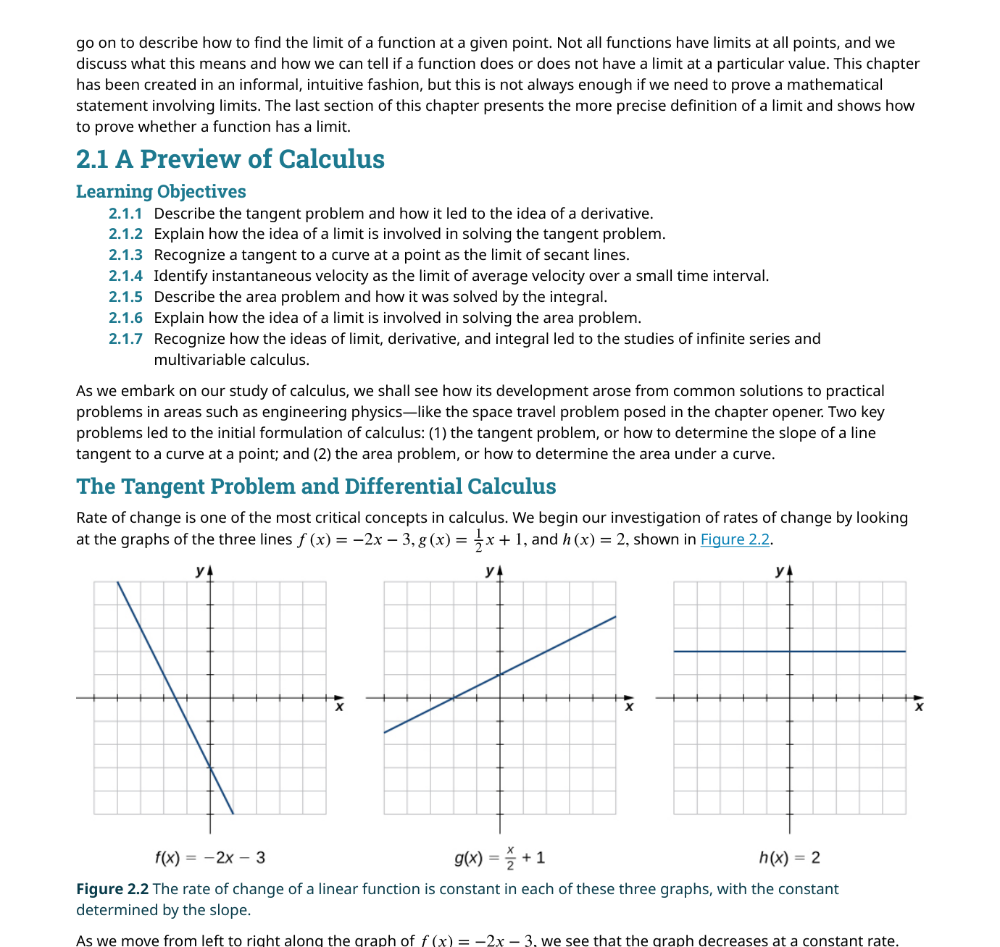
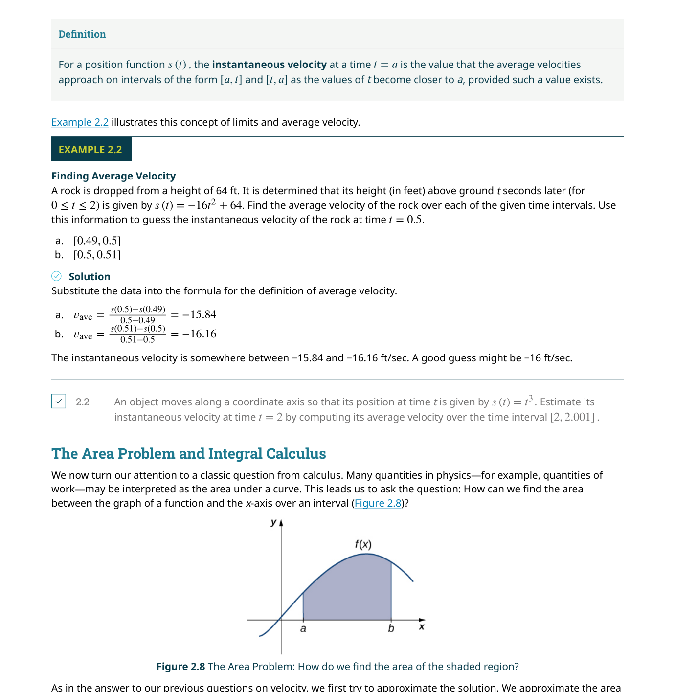
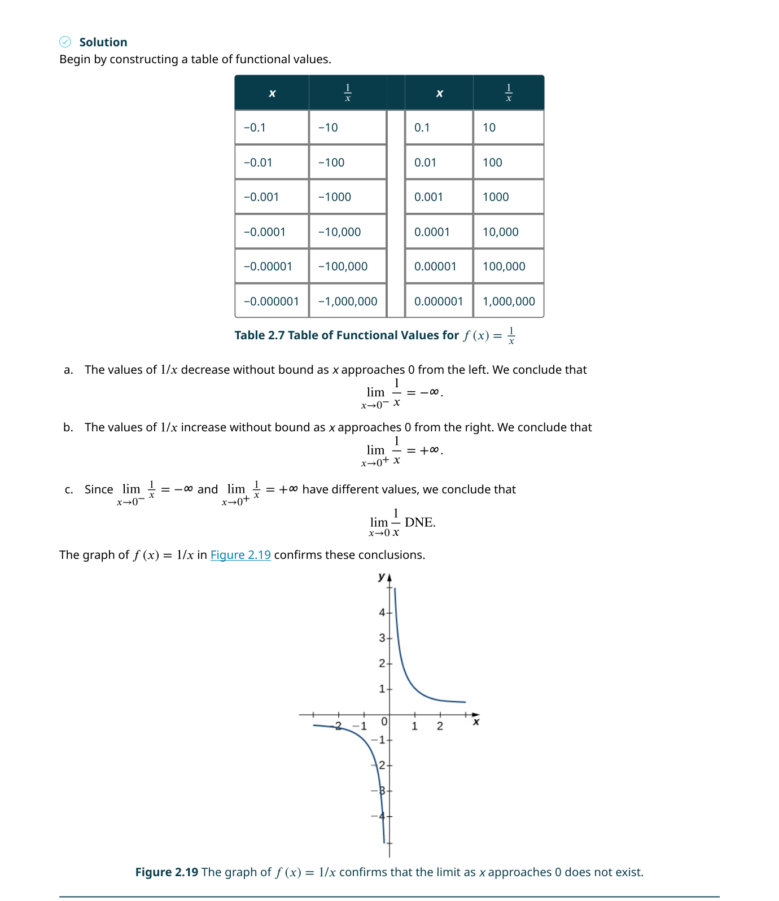
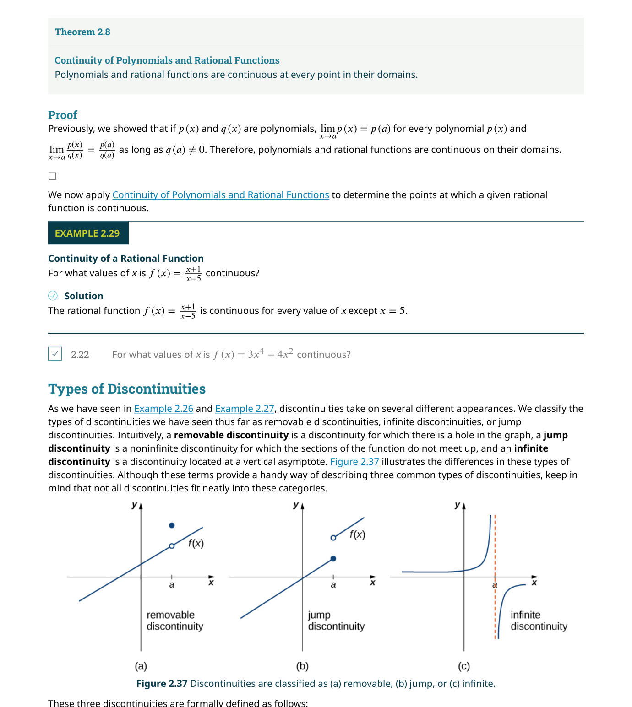
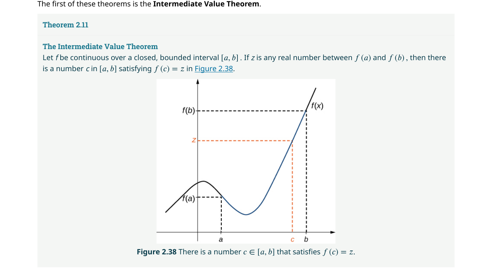
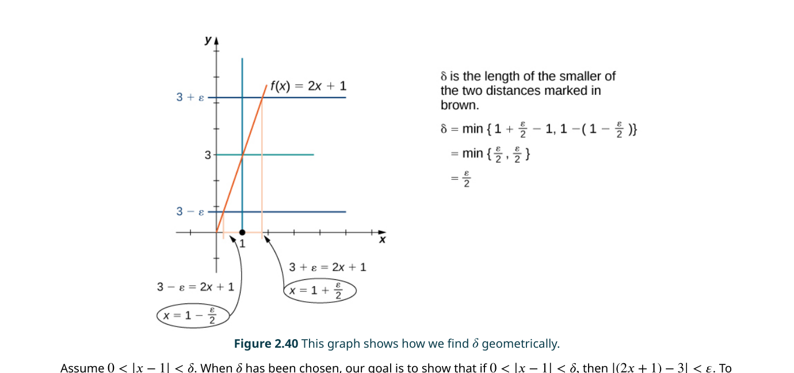

第 2 章 極限 Limits
🔍 章前預覽：本章回答了什麼？
核心問題：
- 什麼是「極限」（limit）？為什麼它是整個微積分的基礎？
- 如何用表格、圖形與代數方法求出函數在某一點的極限？
- 極限法則（limit laws）如何讓複雜的極限計算變得系統化？
- 什麼是連續性（continuity）？函數不連續有哪三種類型？
- 如何用 ε-δ 語言給出極限的精確定義，並用此定義證明極限成立？
🧭 本章推理地圖
切線與速度的直覺（§2.1） → 引出極限的非正式概念 → 極限的精確定義與計算法則（§2.2–§2.3）建立嚴格基礎 → 連續性（§2.4）連結極限與函數行為 → ε-δ 定義（§2.5）提供終極嚴格性 → 極限概念是第 3 章導數（Ch3）的必要條件
核心問題：
- 什麼是「極限」（limit）？為什麼它是整個微積分的基礎？
- 如何用表格、圖形與代數方法求出函數在某一點的極限？
- 極限法則（limit laws）如何讓複雜的極限計算變得系統化？
- 什麼是連續性（continuity）？函數不連續有哪三種類型？
- 如何用 ε-δ 語言給出極限的精確定義，並用此定義證明極限成立？
🧭 本章推理地圖
切線與速度的直覺（§2.1） → 引出極限的非正式概念 → 極限的精確定義與計算法則（§2.2–§2.3）建立嚴格基礎 → 連續性（§2.4）連結極限與函數行為 → ε-δ 定義（§2.5）提供終極嚴格性 → 極限概念是第 3 章導數（Ch3）的必要條件
關鍵概念 10 條：
- ① 極限（limit）：當 $x$ 趨近 $a$ 時，$f(x)$ 趨近的唯一實數 $L$
- ② 割線（secant line）→ 切線（tangent line）：微分學的起源
- ③ 瞬時速度 = 平均速度當時間間隔趨近零的極限
- ④ 面積問題：矩形近似求和 → 定積分（definite integral）
- ⑤ 雙側極限存在 ⟺ 左右極限相等
- ⑥ 無窮極限 ≠ 極限不存在；它是對函數行為的描述
- ⑦ 極限法則：和、差、積、商、冪、根的法則
- ⑧ 連續性三條件：$f(a)$ 定義、$\lim_{x\to a}f(x)$ 存在、兩者相等
- ⑨ 中間值定理（IVT）：連續函數在閉區間上取遍所有中間值
- ⑩ ε-δ 定義：$\forall\varepsilon>0,\;\exists\delta>0$ 使得 $0<|x-a|<\delta\Rightarrow|f(x)-L|<\varepsilon$
📐 邏輯鏈：割線斜率 → 極限 → 導數 → 微分學 | 矩形近似面積 → 極限 → 積分 → 積分學 | 極限是兩者的共同語言
📚 先備知識：函數概念（§1.1）、代數運算、絕對值與不等式、三角函數基礎（§1.3）、單位圓
2.1 微積分預覽 A Preview of Calculus
在正式進入微積分的殿堂之前，我們必須先認識：
切線問題問的是：給定一條曲線 $y=f(x)$ 和上面的一點 $(a,f(a))$，如何準確求出通過該點的切線斜率？在物理上，這等同於問「瞬時變化率是多少？」——例如一輛車在某個瞬間的速度。要回答這個問題，我們先從一條通過曲線上兩點的割線（secant line）開始。割線的斜率為 $\displaystyle m_{\text{sec}}=\frac{f(x)-f(a)}{x-a}$。如果我們讓第二個點越來越靠近 $(a,f(a))$，割線就會逐漸轉向切線的方向——在極限過程中，割線斜率的極限就是切線斜率。這個過程所得到的值，就是導數（derivative）。
面積問題則問：給定函數 $y=f(x)$ 在 $[a,b]$ 區間上，如何求出曲線下方與 $x$ 軸之間的面積？古希臘數學家如阿基米德（Archimedes），已經用內接多邊形來逼近圓的面積——這正是極限思想的雛形。在現代微積分中，我們將區間切成 $n$ 個窄長方形，每個寬度為 $\Delta x$，高度為 $f(x_i^*)$，總面積近似為 $\sum f(x_i^*)\Delta x$。當 $n\to\infty$（即 $\Delta x\to 0$），這個和的極限就是定積分（definite integral），記為 $\int_a^b f(x)\,dx$。
這兩個問題——切線與面積——看似毫不相關，但它們的解決方案都使用了相同的「極限」語言。事實上，微積分基本定理（Fundamental Theorem of Calculus）後來證明：微分（求切線斜率）與積分（求面積）是互逆的運算！這簡直是數學史上最優雅的發現之一。🎮 互動模型：割線趨近切線
拖動 h 滑桿讓 Q 點靠近 P 點，觀察割線如何趨近切線。點擊「h → 0」觀看動畫。
此外，微積分還引領我們進入更廣闊的領域
📝 範例
設 $f(x)=x^2$，考慮點 $P(1,1)$。求通過 $P$ 和 $Q(1.5, f(1.5))$ 的割線斜率，以及通過 $P$ 和 $Q(1.1, f(1.1))$ 的割線斜率。
解：
對於 $x=1.5$：$m_{\text{sec}}=\dfrac{f(1.5)-f(1)}{1.5-1}=\dfrac{2.25-1}{0.5}=2.5$
對於 $x=1.1$：$m_{\text{sec}}=\dfrac{f(1.1)-f(1)}{1.1-1}=\dfrac{1.21-1}{0.1}=2.1$
當 $x$ 越接近 $1$，割線斜率越接近 $2$。事實上，$f'(1)=2$。這個過程展示了極限如何從割線過渡到切線。

瞬時速度與極限
在物理中，速度是位置對時間的變化率。如果我們知道物體的位置函數 $s(t)$，則在時間區間 $[a,t]$ 上的平均速度（average velocity）為 $v_{\text{avg}}=\dfrac{s(t)-s(a)}{t-a}$。這個公式的結構與割線斜率完全一致！要得到物體在時刻 $t=a$ 的瞬時速度（instantaneous velocity），我們讓 $t$ 趨近 $a$：$v(a)=\lim_{t\to a}\dfrac{s(t)-s(a)}{t-a}$。
這個看似簡單的極限，實際上統一了數學中的切線問題和物理中的速度問題。正是這種統一性，使得微積分成為自然科學與工程中最強大的數學工具。
📝 範例
一顆石頭從 64 英尺高處落下，高度函數為 $s(t)=64-16t^2$（$t$ 以秒計）。求 $t=1$ 時的瞬時速度。
解：計算平均速度：
在 $[1, 1.5]$：$v_{\text{avg}}=\dfrac{s(1.5)-s(1)}{0.5}=\dfrac{28-48}{0.5}=-40$ ft/sec
在 $[1, 1.1]$：$v_{\text{avg}}=\dfrac{s(1.1)-s(1)}{0.1}=-33.6$ ft/sec
在 $[1, 1.01]$：$v_{\text{avg}}=-32.16$ ft/sec
在 $[1, 1.001]$：$v_{\text{avg}}=-32.016$ ft/sec
這些值趨近 $-32$ ft/sec。實際上 $v(1)=s'(1)=-32$ ft/sec，正是重力加速度的效果。
面積問題與積分學
面積問題是微積分的第二個起源。假設我們想求 $y=f(x)$ 在 $[a,b]$ 上與 $x$ 軸之間的面積。直接計算曲線下面積並不容易，但我們可以用矩形來逼近：把 $[a,b]$ 分成 $n$ 等分，每份寬 $\Delta x=\frac{b-a}{n}$，在每一小段上取一個樣本點 $x_i^*$，構造矩形面積 $f(x_i^*)\Delta x$，然後求和。
當 $n$ 越來越大（矩形越來越窄），這些矩形面積之和就趨近於真正的曲線下面積。這個和的極限被定義為定積分：$\displaystyle\int_a^b f(x)\,dx = \lim_{n\to\infty}\sum_{i=1}^{n}f(x_i^*)\Delta x$。
📝 範例
用三個矩形估計 $f(x)=x^2$ 在 $[0,3]$ 上的曲線下面積。
解：將 $[0,3]$ 分成 $[0,1],[1,2],[2,3]$ 三個子區間，每個寬度為 $1$。取右端點：$f(1)=1$, $f(2)=4$, $f(3)=9$。面積近似 $=1\cdot1+1\cdot4+1\cdot9=14$ 平方單位。使用更多矩形可以得到更精確的結果（實際面積為 $9$ 平方單位）。

除了單變數微積分外，同樣的概念可以延伸到多變數微積分，處理兩個或更多變數的函數。例如，要計算一個曲面 $z=f(x,y)$ 下方在某個平面區域上的體積，我們可以將區域切成小塊，構造小柱體的體積總和，然後取極限。這個過程本質上與單變數積分類似，只是多了一個維度。
2.2 函數的極限 The Limit of a Function
例如，考慮函數 $f(x)=\dfrac{x^2-4}{x-2}$。當 $x=2$ 時分母為 $0$，所以 $f(2)$ 沒有定義。但當 $x\neq 2$ 時，我們可以化簡：$\dfrac{x^2-4}{x-2}=\dfrac{(x-2)(x+2)}{x-2}=x+2$。因此對於所有 $x\neq 2$，$f(x)=x+2$。當 $x$ 趨近 $2$ 時，$x+2$ 趨近 $4$，所以 $\lim_{x\to 2}f(x)=4$。即使函數在 $x=2$ 處有一個「洞」，極限仍然存在。
用表格估計極限
估計極限最直接的方法是構造一個函數值表格。取兩組 $x$ 值——一組從左側逼近 $a$（$x
這個方法雖然直觀，但有兩個限制：(1) 表格只能提供近似值，不能嚴格證明極限的存在；(2) 某些函數（如 $\sin(1/x)$ 在 $x\to 0$ 時）的振盪行為可能被表格誤導。因此，表格法應該與圖形法和代數法配合使用。
📝 範例
這是微積分中最重要的極限之一。
| $x$ | $\frac{\sin x}{x}$ | $x$ | $\frac{\sin x}{x}$ |
|---|---|---|---|
| −0.1 | 0.998334 | 0.1 | 0.998334 |
| −0.01 | 0.999983 | 0.01 | 0.999983 |
| −0.001 | 0.99999983 | 0.001 | 0.99999983 |
兩側的值都趨近 $1$，因此 $\displaystyle\lim_{x\to 0}\frac{\sin x}{x}=1$。這個極限在後續章節中至關重要。
兩個基本極限
在繼續深入之前，有兩個看似平凡但極其重要的極限值得先建立：
極限不存在的三種情況
並非所有函數在每一點都有極限。以下是三種常見的「極限不存在」情況：
(1) 左右極限不相等：若 $\lim_{x\to a^-}f(x)\neq\lim_{x\to a^+}f(x)$，則雙側極限不存在。典型的例子是階梯函數 $f(x)=\frac{|x|}{x}$ 在 $x=0$ 處——左極限為 $-1$，右極限為 $1$。
(2) 振盪行為：函數 $f(x)=\sin(1/x)$ 在 $x\to 0$ 時在 $-1$ 和 $1$ 之間無限快速振盪，無法趨近單一數值。無論 $x$ 多靠近 $0$，函數值仍然在整個 $[-1,1]$ 區間內來回跳動。
(3) 無界增長（無窮極限）：當函數值在某一點附近無限增大（或減小），我們寫成 $\lim f(x)=\infty$（或 $-\infty$）。嚴格來說，這表示極限「不存在」於實數系中，但「$\infty$」的寫法提供了有用的行為描述，並指出垂直漸近線（vertical asymptote）的位置。
單側極限（One-Sided Limits）
有時候，即使雙側極限不存在，我們仍然可以討論左極限和右極限。左極限 $\lim_{x\to a^-}f(x)=L$ 表示當 $x$ 從左側（$x
📝 範例
設 $f(x)=\begin{cases} x+1, & x<2 \\ x^2-4, & x>2 \end{cases}$，求 $\lim_{x\to 2^-}f(x)$ 和 $\lim_{x\to 2^+}f(x)$。
解：當 $x\to 2^-$（從左側），使用 $f(x)=x+1$，所以 $\lim_{x\to 2^-}f(x)=3$。
當 $x\to 2^+$（從右側），使用 $f(x)=x^2-4$，所以 $\lim_{x\to 2^+}f(x)=0$。
因為左右極限不相等（$3\neq 0$），所以 $\lim_{x\to 2}f(x)$ 不存在。
無窮極限與垂直漸近線
當函數在 $x\to a$ 時無限增大，我們說 $\lim_{x\to a}f(x)=\infty$。這雖然不是一個「真正的」極限（$\infty$ 不是實數），但它是對函數行為的有用描述。這類情況對應圖形上的垂直漸近線（vertical asymptote） $x=a$。
例如 $f(x)=\frac{1}{x}$ 在 $x=0$ 處：$\lim_{x\to 0^-}\frac{1}{x}=-\infty$，$\lim_{x\to 0^+}\frac{1}{x}=+\infty$。兩側方向不同，所以雙側極限不存在（有時寫作 DNE），但 $x=0$ 確實是一條垂直漸近線。一般來說，若 $n$ 為偶數，$\lim_{x\to a}\frac{1}{(x-a)^n}=+\infty$；若 $n$ 為奇數，則左右兩側一正一負。

愛因斯坦的質量公式：一個極限的應用
回到本章開頭的問題：物體的速度有極限嗎？根據愛因斯坦的狹義相對論，運動物體的質量為 $m=\dfrac{m_0}{\sqrt{1-v^2/c^2}}$，其中 $m_0$ 是靜止質量，$v$ 是速度，$c$ 是光速。當 $v\to c^-$ 時，分母趨近 $0^+$，所以 $m\to\infty$。這意味著：要將有質量的物體加速到光速，需要無窮大的能量——因此光速是宇宙中任何有質量物體的速度上限。
2.3 極限法則 The Limit Laws
極限法則的核心思想是：如果我們知道 $\lim_{x\to a}f(x)=L$ 和 $\lim_{x\to a}g(x)=M$（兩者都是實數），那麼我們可以推導出 $f(x)$ 和 $g(x)$ 經過加、減、乘、除等運算後的極限。這些法則的嚴格證明需要 ε-δ 定義（見 §2.5），但它們的直覺非常自然：既然 $f(x)$ 趨近 $L$ 且 $g(x)$ 趨近 $M$，那麼 $f(x)+g(x)$ 應該趨近 $L+M$，依此類推。
多項式與有理函數的極限
一個極其實用的推論是：對於任何多項式 $p(x)$，$\lim_{x\to a}p(x)=p(a)$。也就是說，你可以直接把 $a$ 代入多項式中求極限。對於有理函數 $r(x)=\frac{p(x)}{q(x)}$，只要 $q(a)\neq 0$，同樣可以代入：$\lim_{x\to a}r(x)=r(a)$。這就是所謂的直接代入法（direct substitution）。
但當代入後得到 $\frac{0}{0}$ 的不定型（indeterminate form）時，就不能直接代入了。這表示分子和分母在 $x=a$ 處都為 $0$，它們可能有共同的因式可以消去。常見的處理技巧包括：因式分解與約分、有理化（乘以共軛）、以及化簡繁分數。
📝 範例
求 $\displaystyle\lim_{x\to 3}\frac{x^2-3x}{x^2-9}$。
解：代入 $x=3$ 得 $\frac{0}{0}$，是不定型。因式分解：
$\displaystyle\lim_{x\to 3}\frac{x(x-3)}{(x-3)(x+3)}=\lim_{x\to 3}\frac{x}{x+3}=\frac{3}{6}=\frac{1}{2}$。
關鍵步驟是約去公因式 $(x-3)$，然後再代入。
📝 範例
求 $\displaystyle\lim_{x\to -1}\frac{\sqrt{x+2}-1}{x+1}$。
解：代入得 $\frac{0}{0}$。分子分母同乘共軛 $\sqrt{x+2}+1$：
$\displaystyle\lim_{x\to -1}\frac{(\sqrt{x+2}-1)(\sqrt{x+2}+1)}{(x+1)(\sqrt{x+2}+1)}=\lim_{x\to -1}\frac{(x+2)-1}{(x+1)(\sqrt{x+2}+1)}$
$\displaystyle=\lim_{x\to -1}\frac{x+1}{(x+1)(\sqrt{x+2}+1)}=\lim_{x\to -1}\frac{1}{\sqrt{x+2}+1}=\frac{1}{2}$
夾擠定理（The Squeeze Theorem）
對於某些函數（尤其是三角函數），因式分解和有理化都無能為力。這時候，夾擠定理（squeeze theorem）（又稱三明治定理或夾逼定理）是一個強大的工具。其想法非常直觀：如果一個函數 $f(x)$ 被「夾」在兩個函數 $g(x)$ 和 $h(x)$ 之間，且 $g(x)$ 和 $h(x)$ 在 $x\to a$ 時都趨近同一個極限 $L$，那麼 $f(x)$ 也必然趨近 $L$。
夾擠定理最重要的應用之一是推導兩個關鍵的三角極限：
夾擠定理的幾何證明（$\frac{\sin\theta}{\theta}\to 1$）
在單位圓中，對於 $0<\theta<\frac{\pi}{2}$，由幾何關係可得不等式 $\sin\theta < \theta < \tan\theta$。除以 $\sin\theta$（正數）得到 $1 < \frac{\theta}{\sin\theta} < \frac{1}{\cos\theta}$，取倒數得 $\cos\theta < \frac{\sin\theta}{\theta} < 1$。由於 $\lim_{\theta\to 0^+}\cos\theta=1$ 且 $\lim_{\theta\to 0^+}1=1$，由夾擠定理得 $\lim_{\theta\to 0^+}\frac{\sin\theta}{\theta}=1$。負角的情況可通過 $\frac{\sin(-\theta)}{-\theta}=\frac{\sin\theta}{\theta}$ 的對稱性得出相同結論。
📝 範例
解：由於 $-1\leq\cos(1/x)\leq 1$，乘以 $x^2\geq 0$ 得 $-x^2\leq x^2\cos(1/x)\leq x^2$。
而 $\lim_{x\to 0}(-x^2)=0$，$\lim_{x\to 0}x^2=0$。由夾擠定理，$\lim_{x\to 0}x^2\cos(1/x)=0$。
請注意，$\lim_{x\to 0}\cos(1/x)$ 本身並不存在（振盪行為），但乘以 $x^2$ 後，振幅被「壓縮」到 $0$。
2.4 連續性 Continuity
連續性的正式定義包含三個條件。函數 $f(x)$ 在 $x=a$ 處連續，若且唯若：
(1) $f(a)$ 有定義——函數在該點必須存在。
(2) $\lim_{x\to a}f(x)$ 存在——極限必須是實數（不能是 $\infty$ 或不存在）。
(3) $\lim_{x\to a}f(x)=f(a)$——極限值必須等於函數值。
三個條件缺一不可。任何一條不滿足，函數就在該點不連續（discontinuous）。
三種不連續的類型
當函數不連續時，我們可以根據「為什麼不連續」來分類：
(1) 可移除不連續（removable discontinuity）：極限存在，但 $f(a)$ 無定義，或 $f(a)$ 有定義但不等於極限。圖形上表現為一個「洞」。如果我們重新定義（或補充定義）$f(a)$ 等於極限值，就可以「修復」這個不連續點。例如 $f(x)=\frac{x^2-4}{x-2}$ 在 $x=2$ 處。
(2) 跳躍不連續（jump discontinuity）：左右極限都存在（且為有限值），但不相等。圖形上表現為函數值突然「跳躍」。例如 $f(x)=\frac{|x|}{x}$ 在 $x=0$ 處，從 $-1$ 跳到 $1$。
(3) 無窮不連續（infinite discontinuity）：至少一側的極限是 $\infty$ 或 $-\infty$。圖形上有一條垂直漸近線。例如 $f(x)=\frac{1}{x-2}$ 在 $x=2$ 處。

多項式與有理函數的連續性
一個極其實用的定理：所有多項式在整個實數線 $\mathbb{R}$ 上都是連續的。有理函數在其定義域（分母不為零的所有點）上連續。這直接來自極限法則中的直接代入性質——對於多項式 $p(x)$，$\lim_{x\to a}p(x)=p(a)$，所以三條件自動滿足。對於有理函數 $\frac{p(x)}{q(x)}$，只要 $q(a)\neq 0$，連續性同樣成立。
📝 範例
求 $f(x)=\dfrac{x+2}{x^2-3x+2}$ 的連續區間。
解：分母 $x^2-3x+2=(x-1)(x-2)$。當 $x=1$ 或 $x=2$ 時分母為 $0$。
因此 $f$ 在 $(-\infty,1)$、$(1,2)$、$(2,\infty)$ 上連續。在 $x=1$ 和 $x=2$ 處，$f$ 具有無窮不連續。
合成函數定理（Composite Function Theorem）
如果 $g(x)$ 在 $x=a$ 處連續（即 $\lim_{x\to a}g(x)=g(a)=L$），且 $f$ 在 $L$ 處連續，那麼合成函數 $f(g(x))$ 在 $x=a$ 處也是連續的。用符號表達：$\displaystyle\lim_{x\to a}f(g(x)) = f\!\left(\lim_{x\to a}g(x)\right)$。這意味著我們可以把極限「穿過」連續的外部函數。
這個定理的重要推論是：三角函數 $\sin x$、$\cos x$ 等在它們的整個定義域上都是連續的。證明依賴於我們在 §2.3 中建立的 $\lim_{\theta\to 0}\sin\theta=0$ 和 $\lim_{\theta\to 0}\cos\theta=1$，再結合三角恆等式 $\sin(a+h)=\sin a\cos h+\cos a\sin h$。
中間值定理（Intermediate Value Theorem, IVT）
中間值定理（IVT）是連續函數最深刻也最實用的性質之一。定理陳述：如果 $f$ 在閉區間 $[a,b]$ 上連續，且 $z$ 是介於 $f(a)$ 和 $f(b)$ 之間的任何數，則在 $(a,b)$ 內必定存在至少一個 $c$，使得 $f(c)=z$。
換句話說，連續函數從一個值走到另一個值時，一定會經過所有中間的值——不能「跳過去」。這看似直觀，但它是許多數值方法（如二分法求根）的理論基礎。
📝 範例
證明 $f(x)=x^3-2x-5$ 在 $[2,3]$ 上至少有一個根。
解：$f$ 是多項式，在 $[2,3]$ 上連續。$f(2)=8-4-5=-1$，$f(3)=27-6-5=16$。因為 $f(2)<0

2.5 極限的精確定義 The Precise Definition of a Limit
ε-δ 定義回答了一個基本問題：「$f(x)$ 要多接近 $L$，以及 $x$ 要多接近 $a$，才能保證前者？」更具體地說：
逐詞解析 ε-δ 定義
這個定義初看之下可能令人卻步，但逐詞拆解後其實非常自然：
「對於每一個 $\varepsilon>0$」（$\forall\varepsilon>0$）：想像有人向你挑戰——「你能讓 $f(x)$ 距離 $L$ 不超過 $0.001$ 嗎？」你回答「可以」。然後他又說「那 $0.000001$ 呢？」你又必須回答可以。$\varepsilon$ 代表「容許誤差」，而且這個誤差可以被要求得任意小。
「存在 $\delta>0$」（$\exists\delta>0$）：對於每一個挑戰（$\varepsilon$），你必須找到一個對應的 $\delta$（依賴於 $\varepsilon$），使得只要 $x$ 在 $a$ 的 $\delta$ 鄰域內，$f(x)$ 就保證在 $L$ 的 $\varepsilon$ 鄰域內。$\delta$ 是你的「防禦半徑」——只要 $x$ 在這個半徑內，你就贏了。
「$0<|x-a|<\delta$」：注意 $0<|x-a|$ 這個條件——它排除了 $x=a$ 本身。這反映了極限的定義不關心$f(a)$ 的值（甚至不要求 $f(a)$ 有定義）。我們只關心 $x$ 在 $a$「附近但不等於 $a$」時的行為。
「則 $|f(x)-L|<\varepsilon$」：這是你要保證的結論——只要 $x$ 滿足前述條件，$f(x)$ 就必須在 $L$ 的 $\varepsilon$ 範圍內。$|f(x)-L|$ 表示 $f(x)$ 到 $L$ 的距離。

一個簡單的 ε-δ 證明
最適合入門的 ε-δ 證明是線性函數。讓我們證明 $\displaystyle\lim_{x\to 2}(3x-1)=5$。
📝 範例
證明：設 $\varepsilon>0$。我們需要找到 $\delta>0$ 使得 $0<|x-2|<\delta\;\Rightarrow\;|(3x-1)-5|<\varepsilon$。
注意到 $|(3x-1)-5| = |3x-6| = 3|x-2|$。
我們希望 $3|x-2|<\varepsilon$，即 $|x-2|<\varepsilon/3$。
因此選擇 $\delta=\varepsilon/3$。若 $0<|x-2|<\delta$，則：
$|(3x-1)-5| = 3|x-2| < 3\delta = 3(\varepsilon/3) = \varepsilon$。$\quad\blacksquare$
上述證明的關鍵在於：我們從目標不等式 $|f(x)-L|<\varepsilon$ 出發，代數運算後將其轉化為 $|x-a|<\text{（某個用 }\varepsilon\text{ 表達的式子）}$，然後將這個式子選為 $\delta$。對於線性函數，這個過程非常直接；對於非線性函數，可能需要更精細的技巧。
非線性函數的 ε-δ 證明
當函數不是線性時，$\delta$ 的選擇可能涉及更複雜的代數。例如證明 $\displaystyle\lim_{x\to 2}x^2=4$：我們希望 $|x^2-4|<\varepsilon$。注意到 $|x^2-4|=|x-2|\cdot|x+2|$。如果我們能限制 $|x+2|$ 的大小，就可以把問題轉化為線性的。
一個常見的策略是：先假設 $\delta\leq 1$（這樣 $|x-2|<1$ 意味著 $x\in(1,3)$，從而 $|x+2|\in(3,5)$，所以 $|x+2|<5$）。然後 $|x^2-4|<5|x-2|$。要讓這個小於 $\varepsilon$，我們需要 $|x-2|<\varepsilon/5$。因此選 $\delta=\min(1,\;\varepsilon/5)$。
ε-δ 定義的變體
同樣的精確定義框架可以延伸到其他類型的極限：
左極限：$\lim_{x\to a^-}f(x)=L$ 定義為 $\forall\varepsilon>0,\;\exists\delta>0$ 使得 $a-\delta 右極限：$\lim_{x\to a^+}f(x)=L$ 定義為 $\forall\varepsilon>0,\;\exists\delta>0$ 使得 $a 無窮極限：$\lim_{x\to a}f(x)=\infty$ 定義為 $\forall M>0,\;\exists\delta>0$ 使得 $0<|x-a|<\delta \;\Rightarrow\; f(x)>M$。注意這裡用 $M$（任意大的正數）取代了 $\varepsilon$，用 $f(x)>M$ 取代了 $|f(x)-L|<\varepsilon$。 許多初學者會問：「我真的需要學這個嗎？我之前用表格和法則不是已經夠了嗎？」答案是：ε-δ 定義可能不會在日常計算中頻繁使用，但它提供了極限概念的邏輯基礎。沒有它，我們無法嚴格證明極限法則（如加法法則）、無法證明連續函數的性質（如 IVT）、也無法真正理解分析學（analysis）的後續內容。 更重要的是，ε-δ 定義訓練了一種重要的數學思維方式：將模糊的直覺（「越來越靠近」）轉化為精確的量詞邏輯（「對於每一個……存在……使得……」）。這種思維方式在高等數學中無處不在。 為什麼要學 ε-δ？
📋 關鍵概念回顧（Key Concepts）
- 極限的直覺定義：當 x 趨近 a 時，\(f(x)\) 的值趨近某個固定數 L，記為 \(\lim_{x\to a}f(x)=L\)。
- 用表格估計極限：從左右兩側取 x 值逐步逼近 a，觀察 \(f(x)\) 的趨勢來猜測極限值。
- 用圖形判斷極限：觀察函數圖形在 x=a 附近的行為；極限存在 ⟺ 左右極限相等。
- 左右極限：\(\lim_{x\to a^-}f(x)\) 為左極限、\(\lim_{x\to a^+}f(x)\) 為右極限；兩者相等時雙邊極限才存在。
- 無窮極限：當函數值無限制地增大或減小時記為 \(\infty\) 或 \(-\infty\)；是對行為的描述而非真正的極限。
- 鉛直漸近線：若 \(\lim_{x\to a}f(x)=\pm\infty\)，則 \(x=a\) 是鉛直漸近線。
- 極限法則：和、差、積、商（分母不為零）、常數倍、冪次法則，允許將複雜極限拆解為簡單極限。
- 直接代入法：若 \(f(x)\) 是多項式或有理函數且在 a 處連續，則 \(\lim_{x\to a}f(x)=f(a)\)。
- \(\frac{0}{0}\) 不定型：需用因式分解、共軛有理化或化簡繁分數消除不定性後再求極限。
- 夾擠定理：若 \(g(x) \le f(x) \le h(x)\) 且 \(\lim g = \lim h = L\)，則 \(\lim f = L\)。
- 關鍵三角極限：\(\lim_{\theta\to 0}\frac{\sin\theta}{\theta}=1\)，是推導所有三角函數導數的基礎。
- 連續性：\(f\) 在 a 連續 ⟺ \(\lim_{x\to a}f(x)=f(a)\)；即極限值等於函數值。
- 連續性三條件：\(f(a)\) 有定義、極限存在、極限值等於函數值。
- 連續函數的運算：連續函數的和、差、積、商（分母不為零）及合成仍然是連續函數。
- 中間值定理：若 f 在 \([a,b]\) 連續，則對介於 \(f(a)\) 與 \(f(b)\) 之間的任意值 N，存在 c 使得 \(f(c)=N\)。
- 無窮遠處的極限：\(\lim_{x\to\infty}f(x)=L\) 表示當 x 無限增大時函數趨近 L；水平漸近線 \(y=L\)。
- ε-δ 定義：\(\lim_{x\to a}f(x)=L\) 的精確定義：對任意 \(\varepsilon>0\)，存在 \(\delta>0\) 使得 \(0 \lt |x-a| \lt \delta \implies |f(x)-L| \lt \varepsilon\)。
📐 關鍵公式（Key Equations）
| 公式 | 說明 |
|---|---|
| $$\lim_{x\to a}f(x)=L$$ | 極限的基本記號：x 趨近 a 時 f(x) 趨近 L |
| $$\lim_{x\to a}[f(x)+g(x)]=\lim_{x\to a}f(x)+\lim_{x\to a}g(x)$$ | 極限的和法則 |
| $$\lim_{x\to a}[f(x)g(x)]=\lim_{x\to a}f(x)\cdot\lim_{x\to a}g(x)$$ | 極限的積法則 |
| $$\lim_{x\to a}\frac{f(x)}{g(x)}=\frac{\lim_{x\to a}f(x)}{\lim_{x\to a}g(x)},\quad \lim g \neq 0$$ | 極限的商法則 |
| $$\lim_{x\to a}[f(x)]^n=\left[\lim_{x\to a}f(x) \right]^n$$ | 極限的冪次法則 |
| $$\lim_{\theta\to 0}\frac{\sin\theta}{\theta}=1$$ | 關鍵三角極限（夾擠定理推導） |
| $$\lim_{\theta\to 0}\frac{\cos\theta-1}{\theta}=0$$ | 第二關鍵三角極限 |
| $$\lim_{x\to a}f(x)=f(a)$$ | 連續性的極限定義 |
| $$\lim_{x\to a}f(g(x))=f\!\left(\lim_{x\to a}g(x) \right)$$ | 若 f 連續，則極限可移入外層函數 |
| $$\text{若 } g(x)\le f(x)\le h(x) \text{ 且 } \lim g=\lim h=L\text{，則 }\lim f=L$$ | 夾擠定理 |
| $$\lim_{x\to\infty}\frac{1}{x^r}=0,\quad r>0$$ | 無窮遠處的基本極限 |
| $$\forall\varepsilon>0,\ \exists\delta>0:\ 0 \lt |x-a| \lt \delta\implies|f(x)-L| \lt \varepsilon$$ | 極限的 \(\varepsilon\)-\(\delta\) 精確定義 |
本章摘要
- 2.1 微積分預覽：切線問題 → 割線斜率 → 極限 → 導數。面積問題 → 矩形和 → 極限 → 積分。兩者統一於極限概念。
- 2.2 函數的極限：$\lim_{x\to a}f(x)=L$ 的直覺定義。用表格和圖形估計極限。極限存在 ⟺ 左右極限相等。無窮極限是行為描述，不是真正的極限。
- 2.3 極限法則：和、差、積、商、冪、根的法則。多項式／有理函數的直接代入。$\frac{0}{0}$ 不定型的處理：因式分解、共軛有理化、化簡繁分數。夾擠定理與關鍵三角極限 $\lim_{\theta\to 0}\frac{\sin\theta}{\theta}=1$。
- 2.4 連續性：三條件：$f(a)$ 定義、極限存在、兩者相等。三種不連續：可移除、跳躍、無窮。多項式處處連續；有理函數在分母不為零處連續。合成函數定理。中間值定理（IVT）。
- 2.5 精確定義：ε-δ 定義：$\forall\varepsilon>0,\;\exists\delta>0$ 使得 $0<|x-a|<\delta\Rightarrow|f(x)-L|<\varepsilon$。線性與非線性函數的證明範例。單側極限與無窮極限的 ε-δ 變體。
⚠️ 初學者常見錯誤（≥3 個重點提醒）
當代入得到 $\frac{0}{0}$ 時，許多初學者直接下結論說「極限不存在」。這是錯的！$\frac{0}{0}$ 只是一個不定型（indeterminate form），表示我們需要更多工作來判斷極限值。事實上，很多 $\frac{0}{0}$ 的情況在化簡後會得到明確的有限值。例如 $\lim_{x\to 1}\frac{x^2-1}{x-1}=\lim_{x\to 1}(x+1)=2$。正確做法是先嘗試因式分解、乘共軛或化簡繁分數，而不是直接放棄。
記憶口訣：$\frac{0}{0}$ 不是答案，是「請繼續努力」的信號。
$\infty$ 不是一個實數。當我們寫 $\lim_{x\to a}f(x)=\infty$ 時，我們是在描述函數在 $a$ 附近的無界增長行為，而不是說極限「存在於實數系中」。嚴格來說，在實數系的框架下，這樣的極限是「不存在」的（DNE）。然而，$\infty$ 的記法提供了比單純的 DNE 更多的信息——它告訴我們函數是向哪個方向發散的。兩者的區別在於：DNE 是對極限存在性的判斷；$\infty$ 是對函數行為的描述。
一句話總結：$\infty$ 是行為，不是數值。
極限法則不是無條件成立的。除法則要求分母的極限不為零（$M\neq 0$）；根法則要求當 $n$ 為偶數時 $L\geq 0$（在實數中）。最常見的犯錯情境是：面對 $\lim_{x\to a}\frac{f(x)}{g(x)}$，直接拆成 $\frac{\lim f(x)}{\lim g(x)}$，卻沒有先檢查分母極限是否為零。正確做法是：先用代入法檢測。如果分母極限不為零，可以直接用除法則；如果分母極限為零，則需要進一步分析（可能是無窮極限、或是不定型 $\frac{0}{0}$ 需要化簡）。
黃金規則：永遠先檢查分母！
連續是導數存在的必要條件，但不是充分條件。一個函數可以在某點連續但不可導——最經典的例子是 $f(x)=|x|$ 在 $x=0$ 處：函數連續（沒有斷裂），但因為左右兩側的「斜率」不同（左側為 $-1$，右側為 $+1$），導數不存在（在該點有一個「尖角」或 corner）。
簡記：可導 ⇒ 連續，但連續 ⇏ 可導。
在撰寫 ε-δ 證明時，初學者經常犯下邏輯方向錯誤：從 $|f(x)-L|<\varepsilon$ 開始推導，最後「得出」$|x-a|<\delta$。雖然這在草稿分析（scratch work）中是合理的方法，但在正式證明中必須反過來——先宣告 $\delta$，再從 $|x-a|<\delta$ 推導 $|f(x)-L|<\varepsilon$。如果方向錯了，證明在邏輯上是無效的。正式證明必須遵循「假設前提 → 推出結論」的結構。
證明結構：① 設 $\varepsilon>0$。② 選擇 $\delta=\ldots$。③ 假設 $0<|x-a|<\delta$。④ 推導出 $|f(x)-L|<\varepsilon$。⑤ ∎
✅ 自我檢測（Self-Check）
完成以下題目檢驗你對本章核心概念的掌握程度。點擊展開查看答案。
題 1：若 $\lim_{x \to a} f(x)$ 存在，是否代表 $f$ 在 $x=a$ 處連續？
答案：不一定。連續需要三個條件同時成立：(1) $f(a)$ 有定義；(2) $\lim_{x \to a}f(x)$ 存在；(3) $\lim_{x \to a}f(x)=f(a)$。僅有極限存在不足以保證連續性——函數可能在 $a$ 處無定義（可移除不連續），或極限值不等於函數值。
題 2：判斷對錯：「$\lim_{x \to 0}\frac{1}{x} = \infty$，所以此極限存在。」
答案：錯。$\infty$ 不是一個實數。當我們寫 $\lim f(x)=\infty$，是在描述函數無界增長的行為，而非極限存在於實數系中。嚴格來說，該極限「不存在」（DNE），$\infty$ 只是提供了比單純 DNE 更多的資訊（告知發散方向）。
題 3：計算 $\displaystyle\lim_{x \to 2}\frac{x^2-4}{x-2}$。
答案：$4$。代入 $x=2$ 得 $\frac{0}{0}$ 不定型，因式分解：$\frac{(x-2)(x+2)}{x-2}=x+2$（$x \neq 2$），取極限得 $2+2=4$。此處 $x=2$ 是可移除不連續點。
題 4：使用夾擠定理計算 $\displaystyle\lim_{x \to 0} x^2 \sin\frac{1}{x}$。
答案：$0$。因為 $-1 \le \sin\frac{1}{x} \le 1$，所以 $-x^2 \le x^2\sin\frac{1}{x} \le x^2$。由於 $\lim_{x \to 0}(-x^2)=0$ 且 $\lim_{x \to 0}x^2=0$，由夾擠定理得極限為 $0$。
題 5：求 $a,b$ 使 $f(x)=\begin{cases} x^2, & x < 2 \\ ax+b, & x \ge 2 \end{cases}$ 在 $x=2$ 處連續。
答案：需要 $2a+b=4$，其中 $a$ 可為任意值，$b=4-2a$。連續條件：$f(2)=2a+b$ 必須等於 $\lim_{x \to 2^-}f(x)=2^2=4$，因此 $2a+b=4$。注意連續不要求可導，所以有無窮多組解。
🧪 推導實驗室：$\displaystyle\lim_{\theta\to 0}\frac{\sin\theta}{\theta}=1$ 的完整證明
這是微積分中最重要的極限之一。以下是使用夾擠定理的完整幾何證明：
展開完整推導
展開：從 $\frac{\sin\theta}{\theta}\to 1$ 推導 $\frac{1-\cos\theta}{\theta}\to 0$
📚 延伸資源
- 📖 原文書：OpenStax Calculus Vol. 1, Chapter 2 — 免費線上閱讀
- 🎥 3Blue1Brown Essence of Calculus — YouTube 播放清單（極限的視覺化直覺）
- 🔬 GeoGebra 互動：Secant → Tangent 動態展示
- 📐 ε-δ 互動 Applet：OpenStax ε-δ 展示
- 🧮 習題解答：本章 §2.1–§2.5 共超過 100 道練習題（含 T = 科技題），建議完成至少 30 題涵蓋各節。
- 📊 下一章預告：第 3 章「導數」將基於本章的極限概念，正式定義導數並學習微分法則。